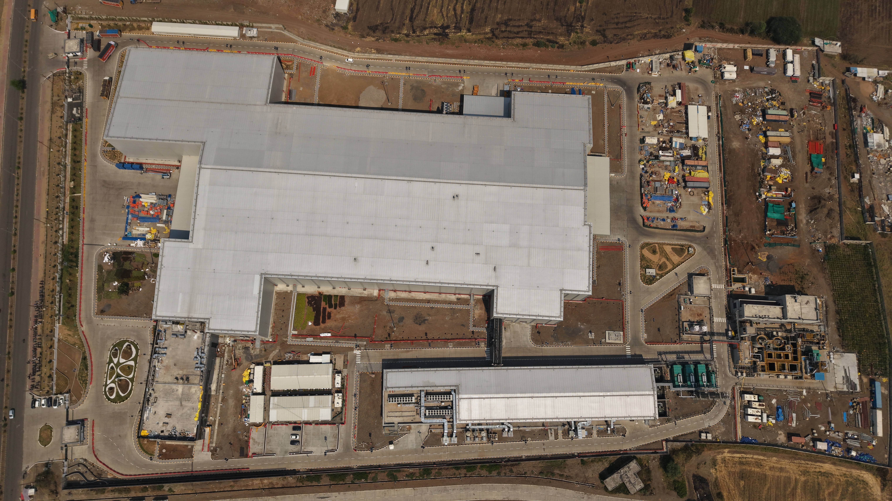

A documented track record of delivery.
8+ years across industrial construction, manufacturing, sustainability and technical operations.
Work Experience

Project Planner / Planning Engineer
- Develop 3‑tier schedules (L1-L3) across 30+ work packages, achieving 98% milestone compliance.
- Daily/weekly lookaheads with 20+ subcontractor teams, reducing workfront conflicts by 30%.
- Track progress against baseline; identified 15+ float risks, saved ~3 weeks of slippage.
- Reduced report generation time by 40% via standardized dashboards.
- Progress measurement for 200+ activities, variance within ±5%.
- Document control for 300+ drawings/submittals, 100% traceability.




Technical Project Manager
- Led 2+ large‑scale sterilization plant projects, combined CAPEX £3M+.
- Managed scope, schedules, budgets, technical coordination.
- Used AutoCAD for 2D drawings (layouts, fabrication, as‑built).

IT Service Desk Analyst
- 95% issue resolution rate during email migration, supported Azure, Exchange, M365, SCCM.

Project Manager - ERP Implementation
- 10% efficiency improvement, projected £100k annual savings. Reduced project risks by 30%, shortened timeline by 15%.
Education
MSc Project Management
Northumbria University (2021–2023) – 2:1 (Commendation)Dissertation: “Investigating the Feasibility of Artificial Intelligence in Risk Management Practices” – Score 65
BE Mechanical Engineering
Savitribai Phule Pune University (2020) – DistinctionTechnical Skills
Primavera P6MS Project/PlannerJira/Asana/MondayAutoCADSolidWorks/CreoANSYSExcel/Power BIRisk ManagementKPI Monitoring
Key Achievements
- £90M+ cumulative project value contributed to
- Managed £3M+ technical infrastructure projects
- Identified £100k annual savings through ERP improvements
- Reduced project risks by 30% via structured controls
- 95% issue resolution rate at NHS Business Services Authority
- Speaker at RAISE 2022 and Jisc Change Agent Network 2023
- Co‑organised TED Talk event at Northumbria Students’ Union